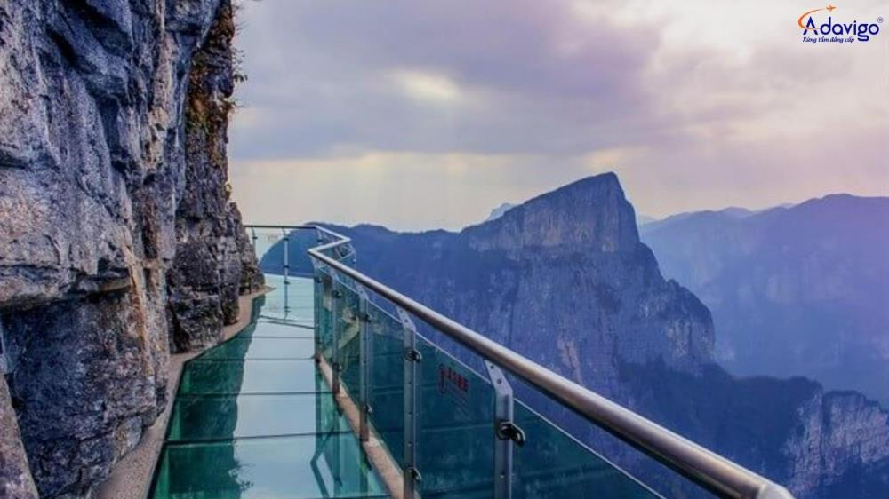

Chào mừng đến với Sa Pa Travel
Trải nghiệm các tour du lịch bản địa, thuê xe, vé cáp treo Fansipan và nhiều dịch vụ khác tại Sa Pa.
Khám phá vẻ đẹp Tây Bắc cùng chúng tôi
Trải nghiệm các tour du lịch bản địa, thuê xe, vé cáp treo Fansipan và nhiều dịch vụ khác tại Sa Pa.
Sa Pa nằm ở độ cao trung bình 1.500 – 1.600 mét so với mực nước biển. Thị trấn được bao quanh bởi dãy núi Hoàng Liên Sơn, trong đó có đỉnh Fansipan, "nóc nhà Đông Dương".
Sa Pa có khí hậu cận nhiệt đới, ôn đới, mát mẻ quanh năm. Thời tiết Sa Pa có sự thay đổi rõ rệt trong ngày, được ví như có đủ bốn mùa: buổi sáng như mùa xuân, trưa như mùa hạ, chiều như mùa thu và tối như mùa đông. Vào mùa đông, Sa Pa có thể có tuyết rơi.
Sa Pa là nơi sinh sống của nhiều dân tộc thiểu số như H'Mông, Dao, Tày, Giáy, Xá Phó, Kinh, Hoa. Mỗi dân tộc đều có những nét văn hóa, phong tục tập quán riêng, tạo nên sự đa dạng và độc đáo cho Sa Pa. Chợ phiên Sa Pa là một điểm đến hấp dẫn, nơi du khách có thể tìm hiểu văn hóa, mua sắm đặc sản địa phương và thưởng thức ẩm thực.
Những thửa ruộng bậc thang xanh mướt uốn lượn trên sườn núi là một trong những hình ảnh đặc trưng của Sa Pa.
Du khách có thể chinh phục đỉnh Fansipan, nóc nhà Đông Dương bằng cáp treo hoặc trekking.
Nhà thờ đá cổ, biểu tượng của thị trấn Sa Pa, mang kiến trúc Pháp độc đáo.
Bản làng truyền thống của người H'Mông, nơi du khách có thể khám phá đời sống văn hóa, phong tục tập quán của người dân địa phương.
Núi Hàm Rồng là một điểm tham quan lý tưởng để ngắm toàn cảnh thị trấn Sa Pa và thung lũng Mường Hoa.
là những điểm đến hấp dẫn để khám phá thiên nhiên hoang sơ và văn hóa các dân tộc.
Hồ nằm giữa trung tâm thị trấn, là nơi thư giãn và tận hưởng không khí trong lành.
Cầu kính nằm ở độ cao 2.200m, là điểm tham quan và thử thách sự can đảm của du khách.
